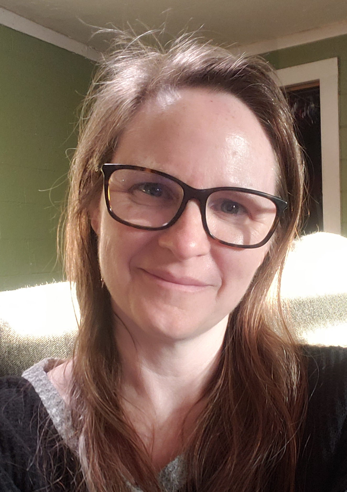

Alexa Kirk
Objective:
To contribute my software engineering knowledge to a leading company by obtaining a position in .NET software development.
Education
- B.S. Computer Engineering, August 2016, The University of Texas at Arlington
- B.S. Biology, December 1996, The University of Texas at Arlington
Work Experience
May 2016 to Present - Elbit Systems of America
Senior Software Engineer (August 2021 to Present)
-
Transfer of Technology Lead for the code base for an Infantry Fighting Vehicle, training on the software and architecture, creating documentation, and supervising setup of the systems integration lab.
-
Sole developer of C# software running as a service that acts as a driver between an X-band radar and a web-based GUI. Developed features for the GUI in Java and Javascript to command the radar and to display radar data and detections to the user, leading to a successful demonstration to the customer.
-
Created stand-alone tools, both internal and customer-facing, using WinForms and WPF MVVM design patterns to convert radar detections to a government-specific communications protocol, to simulate radar data, and to log messages and detections.
-
Developed a Windows GUI that interfaced with a .NET process running on a Xavier board with a Linux OS, modifying the .NET process as needed.
Software Engineer II (July 2017 - August 2021)
-
Developed C# software running as a service that drives the communication between a camera system and a C# Windows application. Developed TCP communications protocols so that the user could command and control the day and IR cameras, the laser range finder, and the spotlight on the camera system.
-
Developed C# software that interfaced with a perimeter security radar using websockets.
-
Lead developer for a Windows application that ran in the cab of a truck and interfaced with sensors mounted in the back of the truck to monitor the system and surrounding area, which led to a successful customer demonstration and ultimate customer order of the product.
-
Developed features for a Java/Javascript web application with communications to MongoDB and a Windows server.
-
Participated in code reviews for other developers, created witnessed builds for software installations, and created and updated documentation and artifacts for configuration management.
Software Engineer I (August 2016 - July 2017)
-
Developed several new features for a C# based client/server application, leading to a successful customer update of the software.
-
Debugged and fixed many issues both in a development environment and in the field in real time.
Software Engineer Intern (May 2016 - August 2016)
-
Updated documentation, traced requirements, and conducted software testing and code reviews.
Skills
- Very skilled in C#, .NET Framework, WPF, MVVM, WinForms, Visual Studio, SDLC, Agile/Scrum methods, JSON, XML, ZeroMQ, Git, Jira, OOP
- Moderately skilled in Java, C, C++, Intellij, SVN, Python, MongoDB, HTML, CSS, Azure, Jenkins
- Some experience in MQTT, Javascript, Docker, Android/Android Studio, SQL, Rest API, SOAP, Microservices, DocFX
Continuing Education
{kind=link}